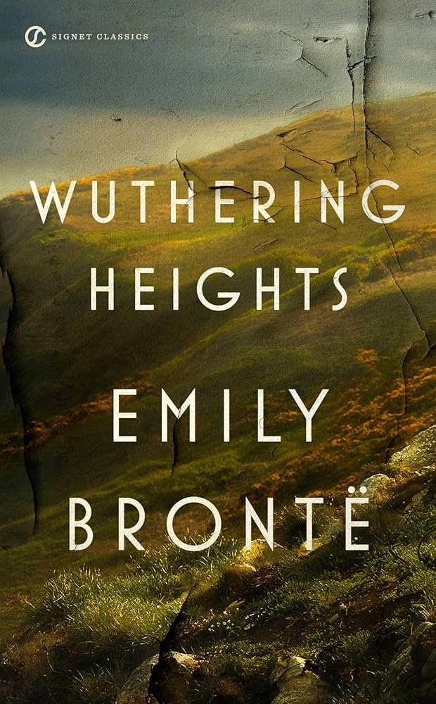
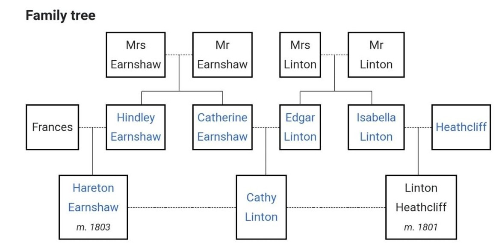

Author: എമിലി ബ്രോണ്ടി
Review by: രാജു ജോസഫ്
ലോകസാഹിത്യത്തിലെ ഏറ്റവും മികച്ചവ എന്നു പൊതുവെ കണക്കാക്കപ്പെടുന്ന ചില കൃതികളേയും അവയുടെ സ്രഷ്ടാക്കളേയും പരിചയപ്പെടുത്താനുള്ള ഒരു ശ്രമം മാത്രമാണിത്. ഏതാണ് ഏറ്റവും മികച്ചത് എന്നതിനെക്കുറിച്ചു മുൻവിധികളൊന്നും ഇല്ലാതെ വിശ്വസാഹിത്യത്തിലെ കുറച്ചു നല്ല കൃതികളെ ഒന്നു തൊട്ടുപോകുക എന്നുമാത്രമേ ഉദ്ദേശിക്കുന്നുള്ളു. ഇവയിൽ പലതും നിങ്ങൾക്ക് പരിചയമുള്ളതാകാം.
ഞാൻ ആദ്യമായി പരിചയപ്പെടുത്തുന്നത് എമിലി ബ്രോണ്ടി എഴുതിയ വുതറിങ്ങ് ഹൈറ്റ്സ് എന്ന നോവലാണ്. എമിലി ബ്രോണ്ടി ഈ ഒരു നോവൽ മാത്രമെ എഴുതിയിട്ടുള്ളു. 1818ൽ ഇംഗ്ലണ്ടിലെ യോർക്ക്ഷയറിൽ ജനനം. 1848ൽ മരണം. 30 വർഷം മാത്രം നീണ്ടുനിന്ന തന്റെ ജീവിതത്തിൽ എമിലിക്ക് താൻ നോവലിൽ കൈകാര്യം ചെയ്ത സങ്കീർണ്ണമായ വൈകാരിക സംഘർഷങ്ങളും, സാഡിസ്റ്റ്-മസോക്കിസ്റ്റ് മനോനിലകളും, പ്രതികാരദാഹത്തിൽ നിന്നുടലെടുക്കുന്ന ക്രൂരതകളും, ഭ്രാന്തിനോളും ചെന്നെത്തുന്ന അഭിനിവേശങ്ങളും ഒന്നും അനുഭവിച്ചറിയാനുള്ള സാഹചര്യം ഉണ്ടായിരുന്നിരിക്കാനിടയില്ല. ഹാവർത്തിലെ വീട്ടിൽ അനുജത്തി ആനിനൊപ്പമായിരുന്നു മരിക്കുവോളും എമിലി. എങ്കിലും ഭാവനയിൽ അവർ രൂപപ്പെടുത്തിയ കഥാപാത്രങ്ങളുടെ പൂർണ്ണത അതിശയകരമാണ്.
വിക്ടോറിയൻ സാഹിത്യത്തിൽ തങ്ങളുടേതായ ഇടം കണ്ടെത്തിയ ബ്രോണ്ടി സഹോദരിമാരിൽ രണ്ടാമത്തെയാളായിരുന്നു എമിലി. 1824ൽ ഹാവർത്ത് എന്ന സ്ഥലത്തെ പള്ളിയിൽ പുരോഹിതനായി അഛൻ പാട്രിൿ നിയമിതനായതോടെ ബ്രോണ്ടി കുടുംബം അവിടേക്ക് താമസം മാറ്റി. ഇവിടെയാണ് ബ്രോണ്ടി സഹോദരിമാരുടെ സാഹിത്യ ജീവിതത്തിന് പശ്ചാത്തലം ഒരുക്കപ്പെട്ടത്. വളരെ ചെറുപ്പത്തിലെ അമ്മയെ നഷ്ടപ്പെട്ട ഷാർലറ്റും, എമിലിയും, ആനും ആൻഗ്രിയ, ഗോണ്ടാൾ മുതലായ പേരുകളിൽ സങ്കല്പ നാടുകൾ സൃഷ്ടിച്ചെടുക്കുകയും അവയുടെ പശ്ചാത്തലത്തിൽ കഥകളും കവിതകളുമൊക്കെ രചിക്കുകയും ചെയ്തു. സമൂഹത്തിൽ സ്ത്രീ എഴുത്തുകാർക്കെതിരെ നിലനിന്നിരുന്ന മുൻവിധികളെ മറികടക്കാൻ ഷാർലറ്റ് ക്യൂറർ ബെൽ, എമിലി എല്ലിസ് ബെൽ, ആൻ ആക്ടൺ ബെൽ എന്നീ പേരുകളിലാണ് രചനകൾ പ്രസിദ്ധീകരിച്ചത്.
എമിലിക്ക് വളരെ കുറച്ച് ഔപചാരിക വിദ്യാഭ്യാസമെ ലഭിച്ചിരുന്നുള്ളു എങ്കിലും ധാരാളം സാഹിത്യകൃതികൾ വായിക്കാൻ അവൾക്ക് അവസരം ലഭിച്ചു. 1842ൽ എമിലി ഒരു സ്കൂളിൽ ഗവർണസിന്റെ ജോലിയിൽ ചേർന്നെങ്കിലും ആറുമാസം മാത്രമേ അതിൽ തുടർന്നുള്ളു. വീട്ടിലേക്ക് മടങ്ങിയ എമിലി സഹോദരിമാരുമായി ചേർന്ന് സ്വന്തമായി ഒരു സ്കൂൾ തുടങ്ങിയെങ്കിലും കുട്ടികളെ ഒന്നും കിട്ടിയില്ല. 1846ൽ മൂവരും ചേർന്ന് തങ്ങളൂടെ ആദ്യത്തെ കവിതാസമാഹാരം പ്രസിദ്ധീകരിച്ചു. ‘പോയംസ് ബൈ ക്യൂറർ, എല്ലിസ് ആൻഡ് ആക്ടൺ ബെൽ’ എന്നായിരുന്നു പുസ്തകത്തിന്റെ പേര്. 1847ൽ എമിലി, എല്ലിസ് ബെൽ എന്ന പേരിൽ തന്നെ ‘വുതറിംഗ് ഹൈറ്റ്സ്’ പ്രസിദ്ധീകരിച്ചു. ഈ സമയത്തെല്ലാം ഗുരുതരമായ ആരോഗ്യപ്രശ്നങ്ങൾ ഉണ്ടായിരുന്നെങ്കിലും ഡോക്ടറെ കാണാനോ മരുന്നു കഴിക്കാനോ എമിലി തയ്യാറായില്ല. 1848ൽ എമിലി മരിച്ചു. 1850ൽ ഷാർലറ്റ് വുതറിംഗ് ഹൈറ്റ്സ് എഡിറ്റു ചെയ്യുകയും എമിലി ബ്രോണ്ടി എന്ന പേരുവെച്ച് പ്രസിദ്ധീകരിക്കുകയും ചെയ്തു. അക്കാലത്ത് ഈ നോവൽ അധികം ചർച്ചചെയ്യപ്പെടുകയൊന്നും ഉണ്ടായില്ല. സഹോദരിമാരിൽ കൂടുതൽ സ്വീകാര്യത ലഭിച്ചത് ഷാർലറ്റിനായിരുന്നു. ‘ജെയ്ൻ ഐർ’ എന്ന ഷാർലറ്റിന്റെ നോവലിനു വലിയ സ്വീകാര്യതയും ലഭിച്ചു. എന്നാൽ പില്കാലത്ത് വുതറിംഗ് ഹൈറ്റ്സ് ഇംഗ്ലിഷ് നോവൽ സാഹിത്യത്തിലെ ക്ലാസ്സിക്കുകളിൽ ഒന്നായി വാഴ്ത്തപ്പെട്ടു.
‘ഗോഥിക് ഫിക്ഷൻ’ എന്ന വിഭാഗത്തിൽ പെടുന്ന കൃതിയാണ് വുതറിംഗ് ഹൈറ്റ്സ്. പതിനെട്ടാം നൂറ്റാണ്ടിൽ യൂറോപ്പിൽ രൂപം കൊണ്ട രചനാരീതിയാണ് ഗോഥിക് ഫിക്ഷൻ. കാല്പനിക പ്രസ്ഥാനത്തിൽ നിന്ന് ഉരുത്തിരിഞ്ഞു വന്നതാണു ഇത്. ഗോഥിക് നോവലുകളിൽ തീവ്രവൈകാരികത, മനോഹരമായ പ്രകൃതിദൃശ്യങ്ങൾ തുടങ്ങിയ കാല്പനിക ഘടകങ്ങളോടൊപ്പം തന്നെ ഭയം, ബീഭത്സത, മരണം, അമാനുഷിക ശക്തികൾ, പ്രേതങ്ങൾ എന്നിങ്ങനെയുള്ള ഘടകങ്ങളും പ്രത്യക്ഷപ്പെടുന്നു. ഗോഥിക് എന്ന പേര് മധ്യകാല യൂറോപ്പിൽ പ്രചാരത്തിലിരുന്ന നിർമ്മാണരീതിയുമായി (Gothic Architecture) ബന്ധപ്പെട്ട് ഉണ്ടായതാണ്. ഇടിഞ്ഞുപൊളിഞ്ഞു നാശോത്മുഖമായ കെട്ടിടങ്ങളുടേയൊ, കോട്ടകളുടേയോ, സന്യാസശ്രമങ്ങളുടേയോ ഒക്കെ പശ്ചാത്തലത്തിലാണ് ഈ നോവലുകൾ എഴുതപ്പെട്ടത്. നിരവധി പ്രസിദ്ധരായ എഴുത്തുകാർ ഈ സങ്കേതം ഉപയോഗിച്ച് രചനകൾ നടത്തിയിട്ടുണ്ട്. യൂറോപ്പിൽ ആർ. എൽ. സ്റ്റീവൻസൺ (Strange Case of Dr Jekyll and Mr. Hyde), എച്ച്. ജി. വെൽസ് (The Red Room), ചാൾസ് ഡിക്കൻസ് (Bleak House), മേരി ഷെല്ലി (Frankenstein or the Modern Prometheus), അമേരിക്കയിൽ എഡ്ഗാർ അല്ലൻ പോ (Gothic Tales – Collection of stories), നാഥാനിയൽ ഹാത്തോൺ (the Scarlet Letter) തുടങ്ങിയർ ഇവരിൽ ചിലരാണ്.
1801ൽ ലോൿവുഡ്ഡ് എന്നയാൾ യോർക്ക്ഷയർ മൂറിലുള്ള ത്രഷ്ക്രോസ് ഗ്രാഞ്ച് എന്ന വീട് വാടകക്കെടുത്തു താമസം ആരംഭിക്കുന്നു. പരിഷ്കൃത സമൂഹത്തിൽ നിന്നകലെ ജീവിക്കുക എന്നതായിരുന്നു ഉദ്ദേശം. അവിടെ വെച്ച് അയാൾ വീട്ടുടമസ്ഥനായ ഹീത്ക്ലിഫ് എന്ന നിഗൂഢതകളുള്ള മനുഷ്യനെ കണ്ടുമുട്ടുന്നു. അയാൾ താമസിക്കുന്നത് കുറച്ചകലെ ഉള്ള ‘വുതറിംഗ് ഹൈറ്റ്സ്’ എന്ന പഴയ മേനറിൽ ആണ്. ലോൿവുഡ്ഡ് ഗ്രാഞ്ചിലെ കാര്യസ്ഥയായ ‘നെല്ലി’ (എല്ലൻ ഡീൻ) എന്ന സ്ത്രീയോട് ഹീത്ക്ളിഫിനെ കുറിച്ച് അന്വേഷിക്കുകയും അവൾ പറഞ്ഞ കാര്യങ്ങൾ കുറിച്ചുവെക്കുകയും ചെയ്യുന്നു.
നെല്ലി ഒരു കുട്ടിയായിരിക്കുമ്പോൾ തന്നെ വുതറിംഗ് ഹൈറ്റ്സിൽ ജോലിചെയ്തു തുടങ്ങിയിരുന്നു. അവിടുത്തെ ഗൃഹനാഥനായിരുന്ന ഏൺഷാ ഒരിക്കൽ ലിവർപൂളിൽ പോയി മടങ്ങിവരുമ്പോൾ ഇരുണ്ട നിറമുള്ള ഒരു അനാഥബാലനേയും കൂടെ കൂട്ടിയിരുന്നു. ഹീത്ക്ലിഫ് എന്നായിരുന്നു അവന്റെ പേര്. ഏൺഷാ അവനെ തന്റെ കുട്ടികളായ ഹിൻലേയ്ക്കും കാതറിനും ഒപ്പം വളർത്തി. കുട്ടികൾ തുടക്കം മുതലേ അവനോട് ശത്രുതയിലായിരുന്നു. എങ്കിലും അധികം താമസിക്കാതെ കാതറിൻ അവനെ ഇഷ്ടപ്പെടാൻ തുടങ്ങി. വളരെ വേഗം അവർ ഇണപിരിയാത്ത സുഹൃത്തുക്കളായി മാറി. എന്നാൽ ഹിൻലേയ്ക്ക് ഹീത്ക്ലിഫിനോടുള്ള ശത്രുത വർദ്ധിക്കുകയാണുണ്ടായത്. തന്നെക്കാളേറെ ഏൺഷായ്ക്ക് ഇഷ്ടം ഹീത്ക്ലിഫിനെ ആണെന്ന് അവൻ കരുതി. ഹീത്ക്ലിഫിനോട് ഉപദ്രവം തുടർന്നപ്പോൾ ഏൺഷാ ഹിൻലേയെ ഹോസ്റ്റലിൽ അയക്കുന്നു.
മൂന്നു വർഷങ്ങൾക്കു ശേഷം ഏൺഷാ മരിക്കുകയും ഹിൻലേ മടങ്ങിവന്നു വുതറിംഗ് ഹൈറ്റ്സിന്റെ നിയന്ത്രണം ഏറ്റെടുക്കുകയും ചെയ്യുന്നു. ഹിൻലേ അപ്പോഴേക്കും ഫ്രാൻസസ് എന്ന യുവതിയെ വിവാഹം ചെയ്തിരുന്നു. അയാൾ ഹീത്ക്ലിഫിനെ വീട്ടിലെ അംഗം എന്ന നിലയിൽ നിന്നു പുറത്താക്കി ഒരു ജോലിക്കാരൻ മാത്രമാക്കി മാറ്റി. എങ്കിലും ഹീത്ക്ലിഫും കാതറിനും തമ്മിലുള്ള ബന്ധം പഴയതുപോലെ തുടർന്നു. ഒരു രാത്രിയിൽ രണ്ടുപേരും ചേർന്ന് ത്രഷ്ക്രോസ്സ് ഗ്രാഞ്ചിലേക്കു പോകുന്നു. അവിടുത്തെ കുട്ടികളായ എഡ്ഗാറിനേയും ഇസബെല്ലയേയും ശല്യം ചെയ്യുക എന്നതായിരുന്നു ലക്ഷ്യം. അവിടെ വെച്ച് കാതറിനെ ഒരു നായ കടിക്കുന്നു. മുറിവു കരിയുന്നതുവരെ അവൾക്ക് ഗ്രാഞ്ചിൽ കഴിയേണ്ടിവരുന്നു. ഈ ആറാഴ്ചക്കാലത്തിൽ കാതറിൻ എഡ്ഗാർ ലിന്റനുമായി അടുപ്പത്തിലാകുകയും അയാളെ വിവാഹം കഴിക്കാൻ തീരുമാനിക്കുകയും ചെയ്യുന്നു. ഹീത്ക്ലിഫിനോട് കടുത്ത സ്നേഹം ഉണ്ടെങ്കിലും തന്റെ സാമൂഹ്യ അന്തസ്സിനു ചേർന്ന ഭർത്താവാകാൻ അവൻ യോഗ്യനല്ല എന്നാണ് കാതറിൻ കരുതിയത്.
ഹിൻലേയുടെ ഭാര്യ മകൻ ഹേർട്ടന്റെ ജനനത്തോടെ മരിക്കുന്നു. ഇത് അയാളെ ഒരു മദ്യപനും കൂടുതൽ ക്രൂരനും ആക്കുന്നു. ഹീത്ക്ലിഫിനെ അയാൾ കൂടുതലായി ദ്രോഹിക്കാൻ തുടങ്ങുന്നു. കാതറിന്റെ വിവാഹനിശ്ചയത്തിനു ശേഷം ഹീത്ക്ലിഫ് വുതറിംഗ് ഹൈറ്റ്സിൽ നിന്നു പോകുന്നു. എങ്കിലും മുന്നുവർഷം കഴിഞ്ഞ് അയാൾ മടങ്ങി വരുന്നു. അപ്പോഴേക്കും കാതറിനും എഡ്ഗാറും തമ്മിലുള്ള വിവാഹം കഴിഞ്ഞിരുന്നു. മടങ്ങിയെത്തിയ ഹീത്ക്ലിഫ് വേറൊരാളായി മാറിയിരുന്നു. അയാളുടെ കൈവശം ധാരാളം പണമുണ്ടായിരുന്നു. തന്നെ ദ്രോഹിച്ചവരോടെല്ലാം പ്രതികാരം ചെയ്യുക എന്ന ഒറ്റ ലക്ഷ്യം മാത്രമുണ്ടായിരുന്ന അയാൾ അതിനുവേണ്ടി ഏതു ക്രൂരകൃത്യവും ചെയ്യാൻ മടിയില്ലാത്തവനായി മാറിയിരുന്നു. മദ്യപനായ ഹിൻലേയ്ക്ക് അവൻ പണം കടം കൊടുക്കുകയും അതിന്റെ പേരിൽ അയാളുടെ മരണശേഷം വുതറിംഗ് ഹൈറ്റ്സ് സ്വന്തമാക്കുകയും ചെയ്യുന്നു. ഹിൻലെയുടെ മകൻ ഹേർട്ടനെ സ്കൂളിലൊന്നും അയക്കാതെ ഒരു മൃഗത്തെപ്പോലെ വളർത്തുകയും ചെയ്യുന്നു. എഡ്ഗാറിനോടുള്ള പക തീർക്കാൻ ത്രഷ്ക്രോസ്സ് ഗ്രാഞ്ച് സ്വന്തമാക്കണമെന്ന് അയാൾ തീരുമാനിക്കുന്നു. അതിനായി ഇസബെല്ലയെ വശീകരിച്ചു വിവാഹം കഴിക്കുന്നു. എന്നാൽ കാതറിനെ മാത്രം സ്നേഹിക്കാൻ കഴിവുള്ള ഹീത്ക്ലിഫ് തുടക്കം മുതല്കെ അവളോട് വളരെ ക്രൂരമായിട്ടാണ് പെരുമാറിയത്.
എഡ്ഗാറിനും ഹീത്ക്ലിഫിനുമിടയിൽ തീവ്രമായ മാനസിക സംഘർഷങ്ങൾ അനുഭവിക്കുന്ന കാതറിൻ പ്രസവത്തെ തുടർന്നു മരിക്കുന്നു. അവളുടെ മകൾ കാത്തിയെ നെല്ലി വളർത്തുന്നു. കാതറിന്റെ മരണം തളർത്തിക്കളയുന്ന ഹീത്ക്ലിഫ് ‘താൻ മരിച്ച് അവളുടെ കൂടെ എത്തുന്നതുവരെ അവിടം വിട്ട് പോകരുത്’ എന്നു അവളോട് യാചിച്ചുകൊണ്ട് മൂറിലൂടെ അലഞ്ഞുനടക്കുന്നു. ഇതോടൊപ്പം അയാളുടെ ക്രൂരത വർദ്ധിക്കുകയും ചെയ്യുന്നുണ്ട്. തുടർന്ന് ഇസബെല്ല വീടുവിട്ട് ലണ്ടനിലേക്കു പോകുന്നു. അവിടെ വെച്ച് ഒരു ആൺകുട്ടീയെ പ്രസവിക്കുകയും (ലിന്റൺ) ഹീത്ക്ലിഫിനെ അറിയിക്കാതെ അവനെ വളർത്തുകയും ചെയ്യുന്നു.
പതിമൂന്നു വർഷങ്ങൾ കഴിഞ്ഞു. ഇസബെല്ല മരിക്കുകയും ഹീത്ക്ലിഫ് ലിന്റണെ വുതറിംഗ് ഹൈറ്റ്സിലേക്കു കൊണ്ടുവരുകയും ചെയ്യുന്നു. വുതറിംഗ് ഹൈറ്റ്സിനെക്കുറിച്ച് യതൊന്നുമറിയാതെ കാത്തി ത്രഷ്ക്രോസ്സ് ഗ്രാഞ്ചിൽ വളരുന്നു. ഒരു മൃഗത്തിന്റെ കുഞ്ഞിനെപ്പോലെ ഹേർട്ടൻ ഏൺഷാ വുതറിംഗ് ഹൈറ്റ്സിലും. അലഞ്ഞുനടക്കുന്ന കാത്തി ഒരു ദിവസം ഹേർട്ടണെ കാണുകയും അവർ സുഹൃത്തുക്കളാകുകയും ചെയ്യുന്നു. ജന്മനാ തന്നെ ദുർബലനായിരുന്നു ലിന്റൺ. തന്റെ പ്രതികാരത്തിനായുള്ള ഒരു ഉപകരണമായി മാത്രമെ ഹീത്ക്ലിഫ് അവനെ കണക്കാക്കിയുള്ളു.
ഒരു ദിവസം വുതറിംഗ് ഹൈറ്റ്സിൽ എത്തുന്ന കാത്തി ലിന്റണുമായി കണ്ടുമുട്ടുകയും അവനുമായി പ്രണയത്തിലാകുകയും ചെയ്യുന്നു. എന്നാൽ ലിന്റൺ ഹീത്ക്ലിഫിന്റെ നിർദ്ദേശമനുസരിച്ച് അവളോട് പ്രണയം നടിക്കുക മാത്രമായിരുന്നു. ഇതിനിടയിൽ ലിന്റ്ണിന്റെ ആരോഗ്യം കൂടുതൽ മോശമാകുന്നു. ഹീത്ക്ലിഫ് കാത്തിയെ വുതറിംഗ് ഹൈറ്റ്സിലേക്ക് വിളിച്ചുവരുത്തി നിർബന്ധിച്ച് ലിന്റണുമായുള്ള വിവാഹം നടത്തുന്നു. ഈ സംഭവത്തിൽ മനസ്സു തകർന്ന് എഡ്ഗാർ മരിക്കുന്നു. അധികം വൈകാതെ ലിന്റ്ണും മരിക്കുന്നു. ഹീത്ക്ലിഫ് കാത്തിയെ നിർബന്ധിച്ച് വുതറിംഗ് ഹൈറ്റ്സിൽ ഒരു ജോലിക്കാരിയെപ്പോലെ താമസിപ്പിക്കുന്നു. ത്രഷ്ക്രോസ്സ് ഗ്രാഞ്ചിന്റെ നിയന്ത്രണം അയാൾ ഏറ്റെടുക്കുകയും ലോൿവുഡ്ഡിനു അതു വാടകക്കു നല്കുകയും ചെയ്യുന്നു. ഇവിടെ നെല്ലിയുടെ കഥ അവസാനിക്കുന്നു. ഈ കഥ കേട്ടു മനസ്സു മടുത്തുപോകുന്ന ലോൿവുഡ്ഡ് അവിടുത്തെ താമസം മതിയാക്കി ലണ്ടനിലേക്ക് തിരിച്ചുപോകുന്നു.
എങ്കിലും പിന്നീട് എന്തു സംഭവിച്ചു എന്നറിയാനുള്ള ആകാംക്ഷകൊണ്ട് ആറുമാസങ്ങൾക്കു ശേഷം ലോൿവുഡ്ഡ് മൂറിലേക്ക് മടങ്ങിയെത്തുന്നു. അപ്പോഴേക്കും അവിടെ വലിയ മാറ്റങ്ങൾ ഉണ്ടായിക്കഴിരുന്നു. നഷ്ടബോധത്തിലും അതിൽനിന്നുടലെടുത്ത പ്രതികാരത്തിലും സ്വയം മറന്നുപോയ ഹീത്ക്ലിഫിന്റെ ഓർമ്മകളിൽ നിന്നു കാതറിൻ ഒഴികെ എല്ലാവരും ക്രമേണ മാഞ്ഞുപോയി. അയാൾ അവളെ കാണുകയും അവളോടു സംസാരിക്കുകയും ചെയ്തുകൊണ്ട് മൂറിൽ അലഞ്ഞുനടന്നു. ഒരു നാൾ ദുരൂഹമായ സാഹചര്യങ്ങളിൽ അയാൾ മരിക്കുകയും ചെയ്തു. ലോൿവുഡ്ഡും ഹേർട്ടണും മറ്റുചിലരും ചേർന്ന് അയാളെ മൂറിൽ അടക്കം ചെയ്യുന്നു. വുതറിംഗ് ഹൈറ്റ്സിനും ത്രഷ്ക്രോസ്സ് ഗ്രാഞ്ചിനും ഇപ്പോൾ അവകാശികൾ ഹേർട്ടണും കാത്തിയുമാണ്. അവർ വിവാഹം കഴിച്ച് ഒന്നിച്ചു ജീവിക്കുവാൻ തീരുമാനിച്ചിരുന്നു. അടുത്ത നവവത്സരദിനത്തിൽ അവരുടെ വിവാഹമാണ്.
പല ഗ്രാമീണരും ഹീത്ക്ളിഫിനേയും കാതറിനേയും ഒരുമിച്ച് പല ഇടങ്ങളിലും കണ്ടു എന്ന് ലോൿവുഡ്ഡിനോടു പറയുന്നു. ആടുകളേയും കൊണ്ട് എതിരെ വന്ന ഒരു കുട്ടി പേടിച്ചു കരഞ്ഞുകൊണ്ട് അയാളോടു പറയുന്നുണ്ട് ‘ഹീത്ക്ലിഫ് ഒരു സ്ത്രീയുടെ കൂടെ അവിടെ ഇരിക്കുന്നുണ്ട്, എനിക്കതിലെ പോകാൻ വയ്യ’ എന്ന്. എന്നാൽ അയാൾക്ക് ആരേയും കാണാൻ കഴിയുന്നില്ല. അവിടെനിന്ന് അയാൾ ആ മൂന്നു ശവകുടീരങ്ങളുടെ അരികിലേക്കു പോകുന്നു. ‘ഈ ശാന്തമായ മണ്ണിൽ ഉറങ്ങുന്നവരുടെ ഉറക്കം അശാന്തമാണെന്ന് ആർക്കെങ്കിലും, എപ്പോളെങ്കിലും സങ്കല്പിക്കാനാവുമോ’ എന്നു ലോൿവുഡ്ഡ് സ്വയം അത്ഭുതപ്പെടുന്നിടത്ത് നോവൽ അവസാനിക്കുന്നു. [I lingered round them, under that benign sky: watched the moths fluttering among the heath and harebells, listened to the soft wind breathing through the grass, and wondered how anyone could ever imagine unquiet slumbers for the sleepers in that quiet earth.] (Note: ഭാഷയുടെ സൌന്ദര്യം കാണിക്കുന്നതിനാണ് അവസാനത്തെ വാക്യം എടുത്തുചേർത്തത്.)
വെർജിനിയ വൂൾഫ് ഈ നോവലിനെ കുറിച്ചു നടത്തിയ ഒരു നിരീക്ഷണം കൂടി ചേർത്തുകൊണ്ട് ഇത് അവസാനിപ്പിക്കാം. “ഭീമാകാരമായ അവ്യവസ്ഥയിലേക്ക് വെട്ടിമുറിക്കപ്പെട്ട ഒരു ലോകത്തെ അവൾ നോക്കിക്കാണുകയും അതിനെ ഒരു പുസ്തകത്തിലേക്ക് സന്നിവേശിപ്പിക്കാനുള്ള കരുത്ത് തന്റെയുള്ളിലുണ്ട് എന്നു സ്വയം ബോധ്യപ്പെടുകയും ചെയ്തു. ആ ഉല്ക്കടമായ അഭിലാഷം ഈ നോവലിൽ ഉടനീളം അനുഭവിച്ചറിയാം. മനുഷ്യപ്രകൃതിയുടെ പ്രത്യക്ഷമാകലിൽ അന്തർലീനമായി കിടക്കുന്ന ശക്തിയേക്കുറിച്ചു നല്കുന്ന സൂചനകളും അവയെ മഹത്വത്തിന്റെ സമക്ഷത്തിലേക്കുയർത്തുന്നതും ആണ് ഈ പുസ്തകത്തിന് മറ്റുള്ള പുസ്തകങ്ങൾക്കീടയിൽ വലിയ ഔന്നത്യം നല്കുന്നത്.”
“She (Emily) looked out upon a world cleft into gigantic disorder and felt within her the power to unite it in a book. That gigantic ambition is to be felt throughout the novel…..It is this suggestion of power underlying the apparitions of human nature and lifting them into the presence of greatness that gives the book its huge stature among other novels.” (The Common Reader, First Series, 1925).
വുതറിംഗ് ഹൈറ്റ്സിൻ്റെ കഥ മനസ്സിലാകാൻ ഈ ഫാമിലി ട്രീ സഹായിക്കും.